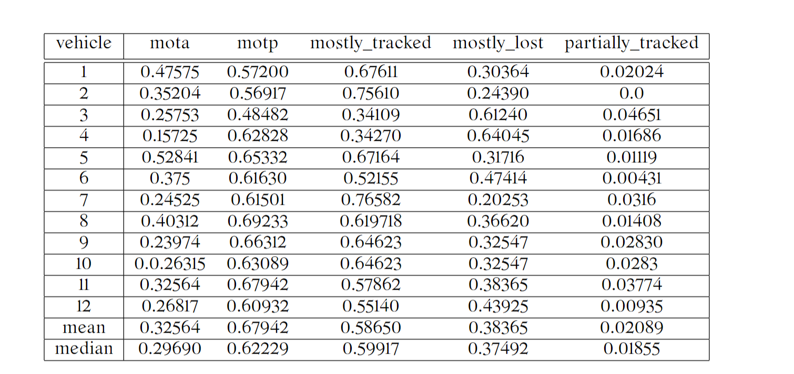

1. Intorduction
The article will introduce my research and implementation during doing the following auto-driving tasks with LiDAR 3D data (Part 1 of PandaSet is taken):
I am finding labs or other kind of organizations that could sponsor me with computing resources for this project.
2. Object Detection
The module is designed to detect cars in one stage. The main idea is to use a neural network to predict a heatmap of where objects are located. In heatmaps, each peak of the heatmap indicates an object’s centroid. For each object, other attributes are also predicted, such as bounding box sizes and heading angles. We also explored and compared different kinds of loss for neural network and different gaussian kernel for heatmap creation.
Click here for details
To visualize LiDAR 3d data in 2d images, visualization applies BEV Voxel Representation (Bird's-Eye-View Representation)
The implementation of this detector can be decomposed into five parts

LiDAR voxelization
Take in an input point cloud and compute a bird's eye view ("BEV") voxel representation. This yields a 3-dimensional binary tensor $\mathcal{O} \in \{0， 1\}^{D \times H \times W}$ indicating whether each voxel is occupied, where $D$, $H$, and $W$ denote the size of the BEV voxel representation along the z-, y-, and x-axes respectively.Feature extraction
Take in the BEV voxel representation $\mathcal{O}$ and forward it into a convolutional neural netwrok ("CNN") to compute a feature grid $\mathcal{F} \in \mathbb{R}^{C \times H \times W}$. Then forward features $\mathcal{F}$ into another smaller CNN to predict dense detection outputs $\mathcal{X} \in \mathbb{R}^{7 \times H \times W}$, where the seven channels encode the detection heatmap, coordinate offsets, box sizes and heading angles.
For heatmap creation, isotropic, anisotropic and rotated gaussian (shown as below) are applied respectively for the following steps.
Model training
To train the model, first compute a training target tensor $\mathcal{Y} \in \mathbb{R}^{7 \times H \times W}$ from ground truth detection labels. Next, use stochastic gradient descent ("SGD") to iteratively minimize square loss: $\mathcal{l}(\mathcal{X}, \mathcal{Y}) = ||\mathcal{X}-\mathcal{Y})||^2_{2}$.Among 7 channels, heatmap data is not generated from a normal distribution. Cross-Entropy Loss is more suitable for classification. Further, to improve heatmap performance, we took more take of hard negative samples, i.e. give the model more "courage" when non-car pixels are hard to classify, as non-car pixels are the majority of the heatmap. We applied Focal Loss (Cross-Entropy Loss is a special case when $\gamma = 1$) $$FL(p, y, \gamma) = -y(1 - p)^\gamma log(p) - (1-y)p^\gamma log(1-p)$$, where $p \in [0, 1]$ is the probability that car exists in each heatmap pixel. It is normalized value of $\mathcal{X}_{heatmap} \in \mathbb{R}^{1 \times H \times W}$ (heatmap channel of $\mathcal{X}$). $y \in \{0, 1\}$ is the ground truth. $\gamma$ is the constant.
Take 2 negative cases for example: case 1 $(p_1, y_1) = (0.1, 0)$ and $(p_2, y_2) = (0.4, 0)$. Case 1 is easy to be classified while case 2 is hard.
| $\gamma = 0$ | $\gamma = 1$ | $\gamma = 2$ | $\gamma = 5$ | |
| $\frac{\frac{\partial{FL}}{\partial{p}} | _{p=0.4, y=0}}{\frac{\partial{FL}}{\partial{p}} | _{p=0.1, y=0}}$ | 1.5 | 1.7 | 16.7 | 1190.7 |
Obviously, the gradient ratio between the samples difficulty to be classified (p = 0.4) and those easy to be classified (p=0.1) sharply increases, which makes the model take more attention to hard negative samples
Further, we also applied $\alpha$ in Focal Loss to balance the bias caused by imbalance between positive and negative sample numbers: $$\alpha-FL(p, \alpha, \gamma) = -\alpha y(1 - p)^\gamma log(p) - (1-\alpha) (1-y)p^\gamma log(1-p)$$
Model inference
To decode detections from $\mathcal{X}$, firstly find local maximums of heatmap to get centroid of car detections and then find detections' corresponding coordinate offsets, box sizes and heading angles.Evaluation
Finally, compute average precision ("AP") with different thresholds to evaluate the performance of the detector. And visualize the corresponding precision/recall curve ("PR Curve").With standard kernel (isotropic gaussian kernel), $\alpha$-balanced focal loss trained a better model than MSE. AP values of model with $\alpha$-balanced focal loss are higher than that with MSE with all thresholds.
However, there are no conclusion that which kind of kernel is better than others.
Next Step
For uncertain performance of different gaussian kernels, I think the reason is that when we take cars' sizes/headings into consideration of heatmap representation in the cases of anisotropic and rotated kernel, cars' sizes/headings are also included in other channel except heatmap. When calculating the total loss, loss of channels are summed up with weights. Hence, reweighting the loss from all channels might be needed.3. Tracking
We applied one tracker to track one unique vehicle across a sequence of LiDAR frames in the order of time. For detected bounding boxes in each LiDAR frame, the goal is to partition the bounding boxes into a set of trackers. At each timestamp, we tracked the new detections by matching against previous observations.
Click here for details
Multi-Frame Tracking
For a sequence of LiDAR frames in the order of time, we conducted online tracking by keep applying the two-frame tracking for the consecutive 2 frames, where two-frame tracking is taking in M detected bounding boxes from the previous frame and N detections from the current frame and computing an assignment matrix $\mathcal{A} \in \{0, 1\}^{M \times N}$ with hungarian matching algorithm.Evaluation
We applied the following objectives:
4. Motion Forecasting
One vehicle's future trajectory will be predicted only based on its past trajectory only. A vehicle's current state as well as its state history are assembled as input into multi-layer perception (MLP). Outputs will represent the predicted state at future $T$ timestamps. We also strided the outputs, i.e. outputs have a lower time frequency than inputs
Click here for details
Vehicle's states encoding and decoding
We applied vehicle's coordinates $(x, y) \in \mathbb{R}^2$ in the past frames as features. The inputs are $\mathcal{X} \in \mathbb{R}^{W \times 2}$, where W is the number of frames. Then forward the inputs into a MLP with the latent dimension of $D$. Next decode the output of latent space to $\mathcal{Y}_{pred} \in \mathbb{R}^{N \times 2}$. At last, take L1 error $||\mathcal{Y} - \mathcal{Y}_{pred}||_{1}$ as loss to train the MLP。Evaluation
After tuning hyperparameters $W, D$, eventually, we got the following result.
| $W$ | $D$ | $ADE$ | $FDE$ |
|---|---|---|---|
| 256 | 10 | 0.57 | 1.26 |
Improvement: Probabilistic Prediction
Instead of predicting a waypoint $s_t=(x,y)$ at each future time step $t$, we predict a Gaussian distribution $\mathcal{N}(s_t|\mu_t, \Sigma_t)$.Given the past trajectories of an agent in a scene $\mathbf{x}$, we want to predict a parametric distribution over future trajectories $\mathbf{s}$: $p(\mathbf{s}|\mathbf{x})$.
A trajectory $\mathbf{s}$ is a sequence of waypoints from time $t=1$ to a fixed time horizon $T$: $\mathbf{s}=[s_1, s_2, \ldots, s_T]$. We are going to model trajectory waypoint uncertainty as a Gaussian distribution parameterized by $\mu_t$ and $\Sigma_t$ which are predicted by our model as a function of $\mathbf{x}$ at each future time step $t$: \[ p(s_t|\mathbf{x}) = \mathcal{N}(s_t|\mu_t(\mathbf{x}), \Sigma_t(\mathbf{x})) \] We will train this model, parameterized by weights $\theta$, by setting the goal of our model to predict parameters for our distribution $p$ such that the likelihood of the ground-truth trajectories $\mathbf{y}$ is maximized. First, lets define our data as a list of size $N$ (number of actors), containing (history, future) pairs: $[(\mathbf{x}^1, \mathbf{y}^1), \ldots, (\mathbf{x}^N, \mathbf{y}^N)]$. We will update the weights $\theta$ according to the negative log-likelihood loss: \[ \mathcal{L}_{\text{NLL}} = -\Sigma_{n=1}^N\Sigma_{t=1}^{T}\text{log}\mathcal{N}(y_t^n|\mu_t(\mathbf{x}^n;\theta), \Sigma_t(\mathbf{x}^n;\theta))\]
A sample pair of visualized results are shown as the following:

References
Click here for details
[1] Keni Bernardin and Rainer Stiefelhagen. Evaluating multiple object tracking performance: The clear mot metrics. J. Image Video Process., 2008, jan 2008.
[2] Sergio Casas, Cole Gulino, Renjie Liao, and Raquel Urtasun. SpAGNN: Spatially-aware graph neural networks for relational behavior forecasting from sensor data. In 2020 IEEE International Conference on Robotics and Automation (ICRA), 2020.
[3] Henggang Cui, Vladan Radosavljevic, Fang-Chieh Chou, Tsung-Han Lin, Thi Nguyen, Tzu-Kuo Huang, Jeff Schneider, and Nemanja Djuric. Multimodal trajectory predictions for autonomous driving using deep convolutional networks. In 2019 International Conference on Robotics and Automation (ICRA), 2019.
[4] Thomas Gilles, Stefano Sabatini, Dzmitry Tsishkou, Bogdan Stanciulescu, and Fabien Moutarde. HOME: heatmap output for future motion estimation. CoRR, abs/2105.10968, 2021.
[5] Harold W. Kuhn. The Hungarian Method for the Assignment Problem. Naval Research Logistics Quarterly, 2(1–2):83–97, March 1955.
[6] St ́ephanie Lef`evre, Dizan Vasquez, and Christian Laugier. A survey on motion prediction and risk assessment for intelligent vehicles. ROBOMECH journal, 1(1):1–14, 2014.
[7] Ming Liang, Bin Yang, Wenyuan Zeng, Yun Chen, Rui Hu, Sergio Casas, and Raquel Urtasun. Pnpnet: End-to-end perception and prediction with tracking in the loop. In Proceedings of the IEEE/CVF Conference on Computer Vision and Pattern Recognition, pages 11553–11562, 2020.
[8] James R. Munkres. Algorithms for the assignment and transportation problems. Journal of the Society for Industrial and Applied Mathematics, 5(1):32–38, March 1957.
[9] Ashish Vaswani, Noam Shazeer, Niki Parmar, Jakob Uszkoreit, Llion Jones, Aidan N Gomez, Lukasz Kaiser, and Illia Polosukhin. Attention is all you need. Advances in neural information processing systems, 2017.
[10] Pengchuan Xiao, Zhenlei Shao, Steven Hao, Zishuo Zhang, Xiaolin Chai, Judy Jiao, Zesong Li, Jian Wu, Kai Sun, Kun Jiang, Yunlong Wang, and Diange Yang. Pandaset: Advanced sensor suite dataset for autonomous driving. CoRR, abs/2112.12610, 2021.
[11] Wenyuan Zeng, Wenjie Luo, Simon Suo, Abbas Sadat, Bin Yang, Sergio Casas, and Raquel Urtasun. End-to-end interpretable neural motion planner. In Proceedings of the IEEE/CVF Conference on Com- puter Vision and Pattern Recognition, 2019.
[12] Hang Zhao, Jiyang Gao, Tian Lan, Chen Sun, Benjamin Sapp, Balakrishnan Varadarajan, Yue Shen, Yi Shen, Yuning Chai, Cordelia Schmid, Congcong Li, and Dragomir Anguelov. TNT: target-driven trajectory prediction. CoRR, abs/2008.08294, 2020.
[13] Julius Ziegler, Philipp Bender, Markus Schreiber, Henning Lategahn, Tobias Strauss, Christoph Stiller, Thao Dang, Uwe Franke, Nils Appenrodt, Christoph G Keller, et al. Making Bertha drive—an au- tonomous journey on a historic route. IEEE Intelligent transportation systems magazine, 6(2), 2014.
[14] Holger Caesar, Varun Bankiti, Alex H. Lang, Sourabh Vora, Venice Erin Liong, Qiang Xu, Anush Krish- nan, Yu Pan, Giancarlo Baldan, and Oscar Beijbom. nuscenes: A multimodal dataset for autonomous driving. In 2020 IEEE/CVF Conference on Computer Vision and Pattern Recognition, CVPR 2020, Seattle, WA, USA, June 13-19, 2020, pages 11618–11628. Computer Vision Foundation / IEEE, 2020.
[15] Alex H. Lang, Sourabh Vora, Holger Caesar, Lubing Zhou, Jiong Yang, and Oscar Beijbom. Pointpillars: Fast encoders for object detection from point clouds. In IEEE Conference on Computer Vision and Pat- tern Recognition, CVPR 2019, Long Beach, CA, USA, June 16-20, 2019, pages 12697–12705. Computer Vision Foundation / IEEE, 2019.
[16] Tsung-Yi Lin, Priya Goyal, Ross B. Girshick, Kaiming He, and Piotr Doll ́ar. Focal loss for dense object detection. In IEEE International Conference on Computer Vision, ICCV 2017, Venice, Italy, October 22-29, 2017, pages 2999–3007. IEEE Computer Society, 2017.
[17] Pengchuan Xiao, Zhenlei Shao, Steven Hao, Zishuo Zhang, Xiaolin Chai, Judy Jiao, Zesong Li, Jian Wu, Kai Sun, Kun Jiang, Yunlong Wang, and Diange Yang. Pandaset: Advanced sensor suite dataset for autonomous driving. CoRR, abs/2112.12610, 2021.
[18] R. Urtasun. CSC490H1, Department of Computer Science, University of Toronto. 2022. 1